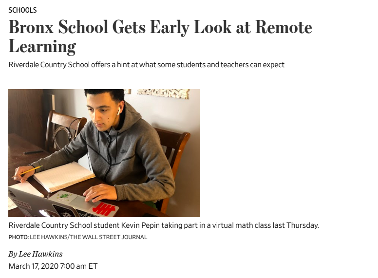
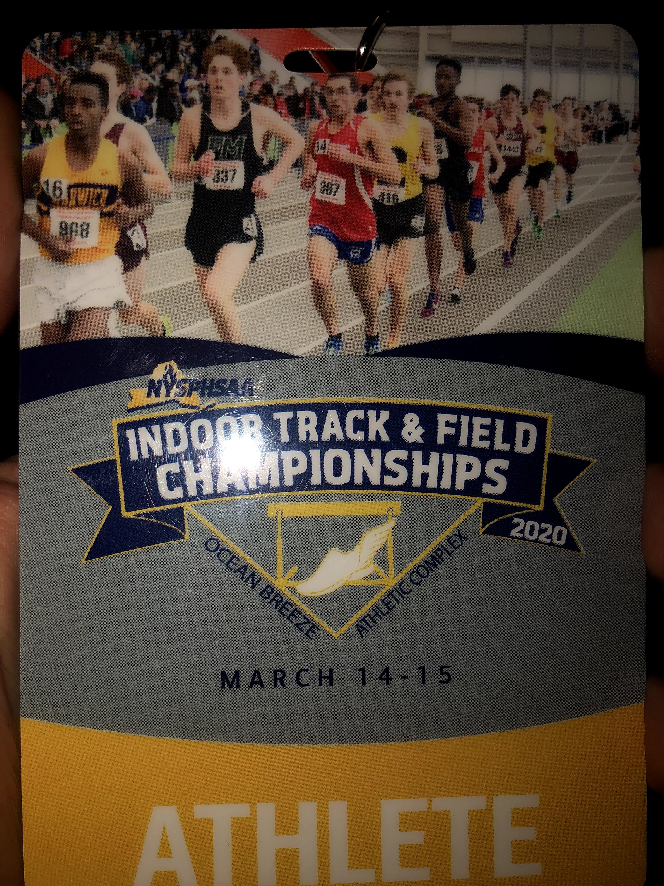

WSJ Appearance
I was recently featured in a Wall Street Journal article written by Lee Hawkins about remote learning at Riverdale. In light of the COVID_19 outbreaks, Riverdale closed school and shifted to a remote learning approach. The WSJ was intruiged, and had my teacher and I conduct a review of a recent test on the remote learning platform. After also being interviewed, the article was published on March 17th, 2020.

Running at Feds
As a member of the record setting 4x200 relay team from the NYSAIS (New York State Assosciation of Independent Schools) meet, I was able to then attend the New York State Public High School Athletic Assosciation championship meet. It was an amazing experience, with a lot of invaluable experience gained from participating in a track meet of such magnitude.

Washington DC Trip
As part of Rivrdale's interdisciplinary course Constructing America, the class of 2021 took a trip to Washington DC. There, I was able to meet with representatives from the NAACP, visit the Supreme Court Library, as well as all the common landmarks. I left the experience more knowledgeable of the magnitude ofAmerica's history, as well as encouraged to make a change.